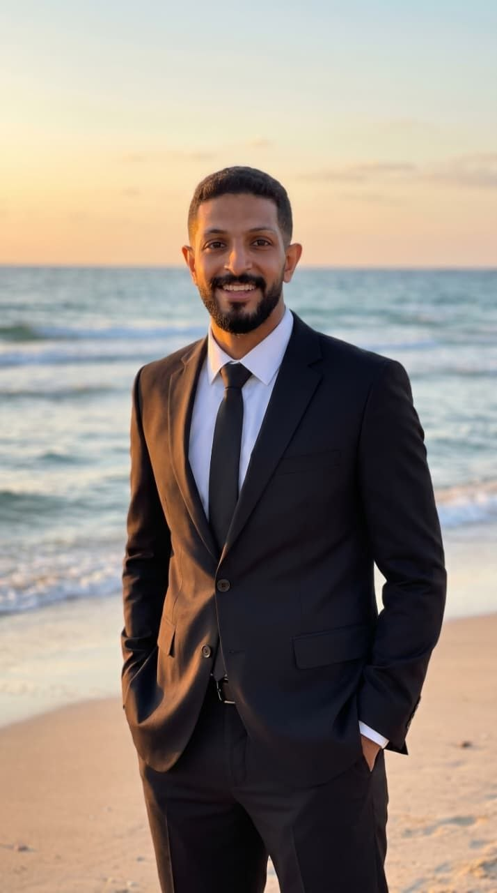

المحامي والباحث في القانون الخاص
رؤية قانونية راسخة.. وأمانة في نصرة الحق
"أنت من تجعل الميزان يميل نحو الحق، وتحمل راية العدالة بصدق ووفاء،
فلتبقَ نبراساً يضيء دروب المظلومين."
ليسانس الحقوق - جامعة أسيوط.
تأسيس علمي قوي في الفقه والقانون من إحدى أعرق كليات الحقوق بمصر.
باحث ماجستير في القانون الخاص - جامعة أسيوط.
متخصص في تعميق البحث القانوني في فروع القانون المدني والتجاري.
محامٍ لدى مجمع محاكم البحر الأحمر (الغردقة).
ممارسة عملية مكثفة في الحضور والمرافعة وصياغة المذكرات القانونية والطعون.